快速开始Quick Start
三种方式把书装进书架：
创作教程Tutorials
想自己动手扩展墨伴？官方示例仓库手把手教你创建书源与插件：
主界面导览Main Tabs
底部导航四个页签：书架、分类、统计、我的。
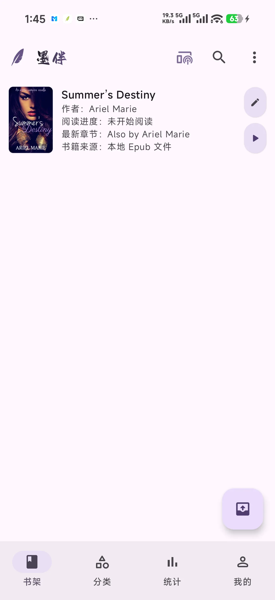
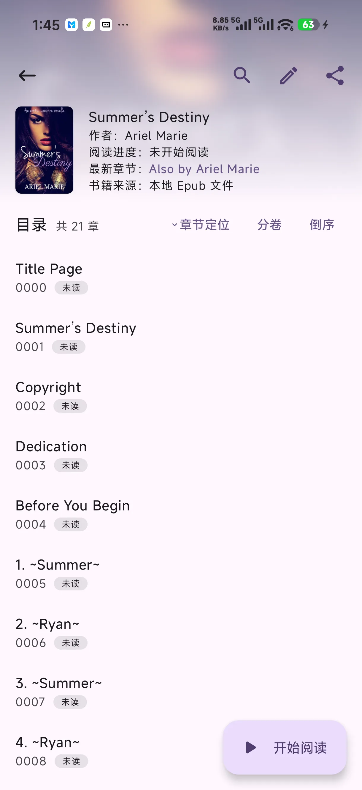
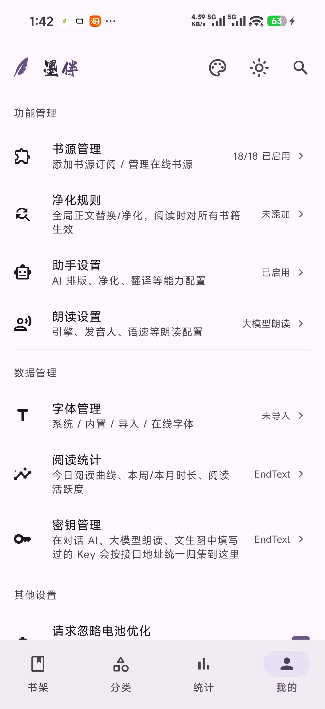
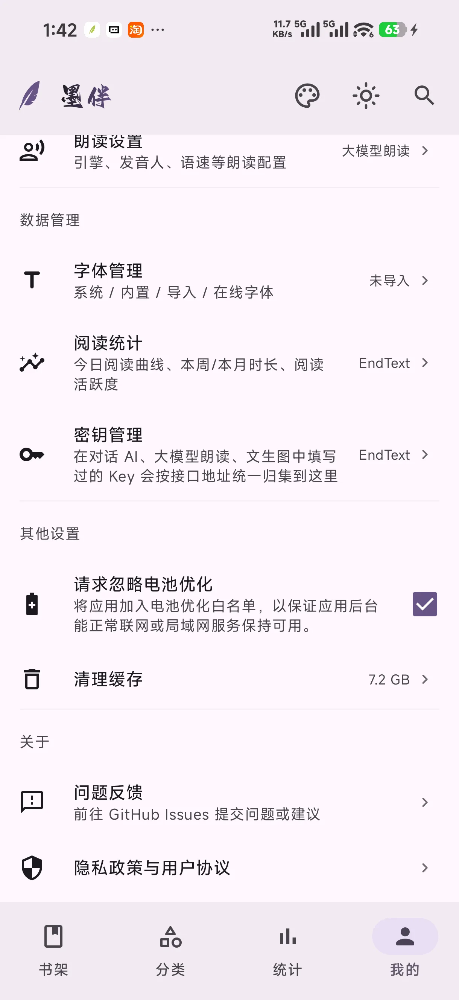
阅读体验Reading
阅读页点击屏幕中央呼出菜单：顶部为章节导航与工具入口，底部为亮度条与五大面板，左右下角悬浮亮度 / AI 助手按钮。
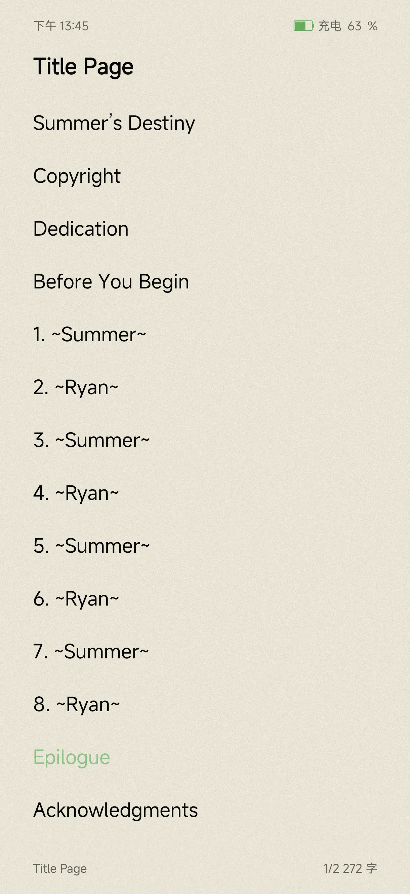
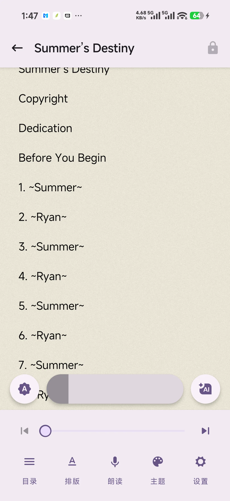
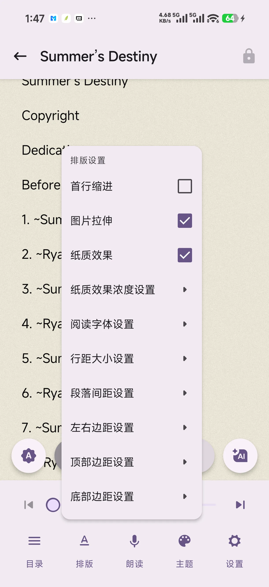
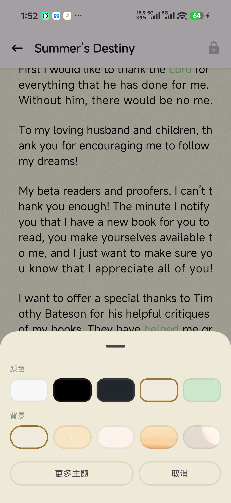
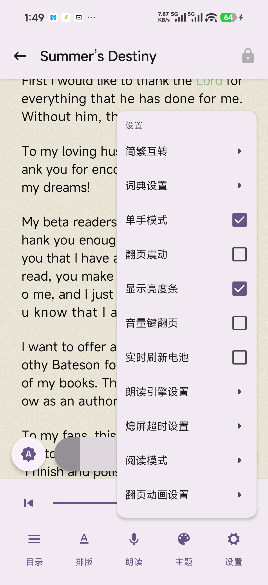
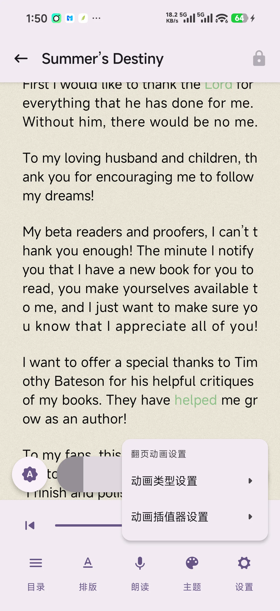
六种翻页动画
- 滑盖翻页 — 当前页像盖子一样滑开露出下一页；回退时上一页从左侧盖入，带边缘阴影。
- 交互翻页 — 跟手平移 + x 轴半速视差 + 整块蒙板渐变，前进回退可随时反向，无限连续拖动。
- 平滑翻页 — 上一页 / 当前页 / 下一页三页并排整体平移，手指拖到哪页翻到哪页。
- 垂直翻页 — 上下滚动式翻页，支持章尾上滑 / 章首下拉跨章续读。
- 仿真翻页 — 纸张卷曲效果，还原实体书翻页手感。
- 禁用动画 — 点击热区 / 拖动直接换页，无动画。
滑盖 / 交互 / 平滑三种横向动画均采用「三页流水线」连续交互：手指左右拖动页面跟手平移，松手按位移与速度自动吸附，一次拖动可连续跨越多页；到达章节边界时提供阻尼外拉回弹。另可选 7 种动画插值器（线性 / 回弹 / 减速 / 加速 / 预判等）。
AI 智能助手AI Assistant
兼容任意 OpenAI 格式接口（DeepSeek、通义、Ollama 本地模型等），Key 仅保存在本机。
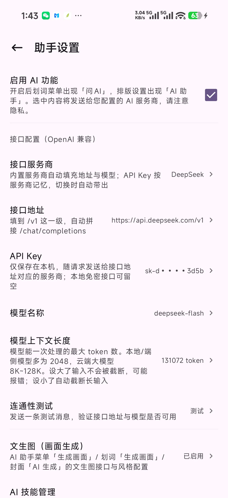
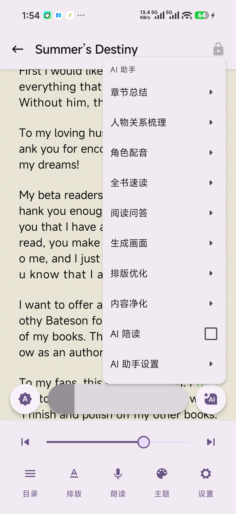
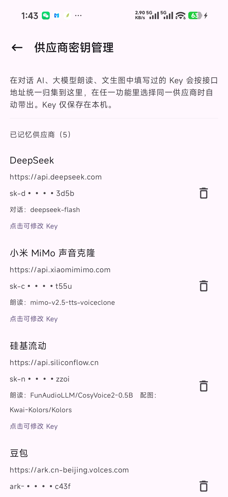
- 章节总结 / 全书速读 — 快速掌握剧情脉络，长书也不怕迷路。
- 人物关系梳理 — 自动整理出场人物与关系网络。
- 阅读问答 — 选中内容即问即答，结合上下文理解文意。
- AI 陪读 — 边读边聊，陪读感想自动缓存避免重复请求。
- 生成画面 — 文生图接口按场景描述生成插图 / 封面，风格可配置。
- 排版优化 / 内容净化 — AI 修正错字与格式、净化广告噪音，保留版权与简介等关键内容。
- 生僻字注音 / 自动打标 — 智能注音与标签，重打标前会提醒避免覆盖原始信息。
- AI 技能管理 — 自定义提示词技能，扩展专属阅读助手。
语音朗读Read Aloud
系统 TTS 与大模型朗读双引擎，阅读页「朗读」面板即可控制。
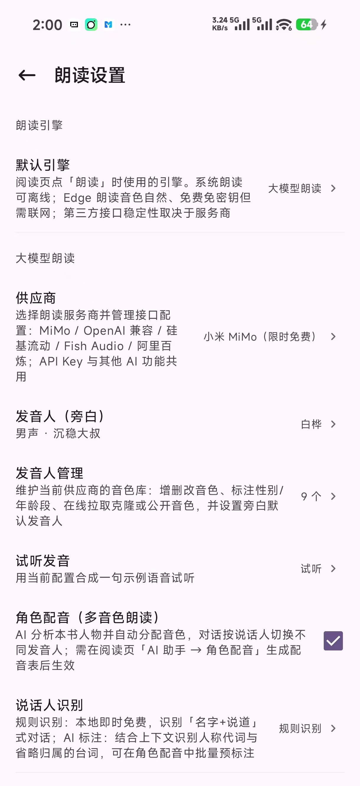
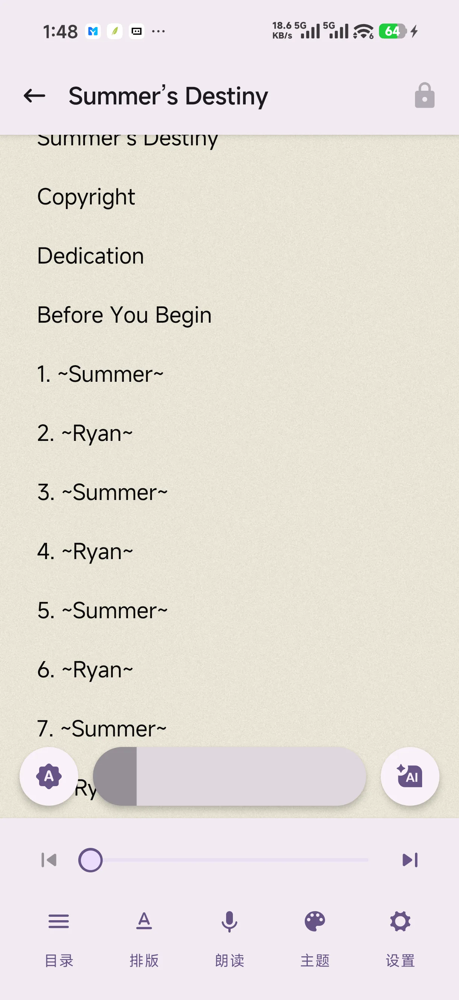
划线 · 笔记 · 词典Notes & Dictionary
拖动式选择
长按词组选择 / 双击取词，可切换整段选择模式，支持跨页选择。
划线与评论
选中文本一键划线、添加批注评论，划线点击可回看与编辑。
点按查词
内置词典（含成语 / 歇后语），点击生僻字与词语即时弹出释义。
划词问 AI
选中内容直接发送给 AI 解释、翻译或展开讨论。
书源与在线内容Online Sources
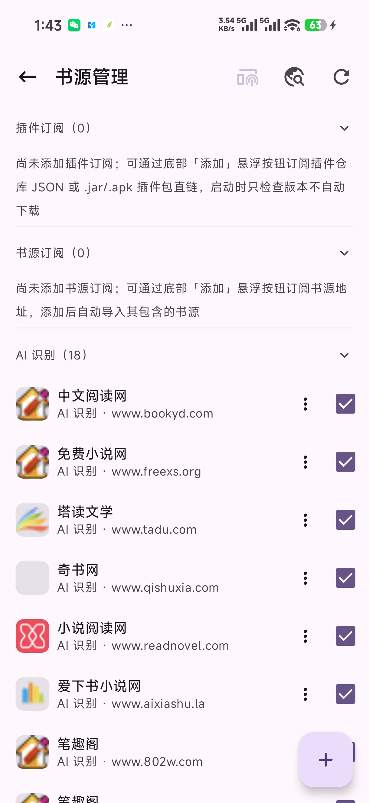
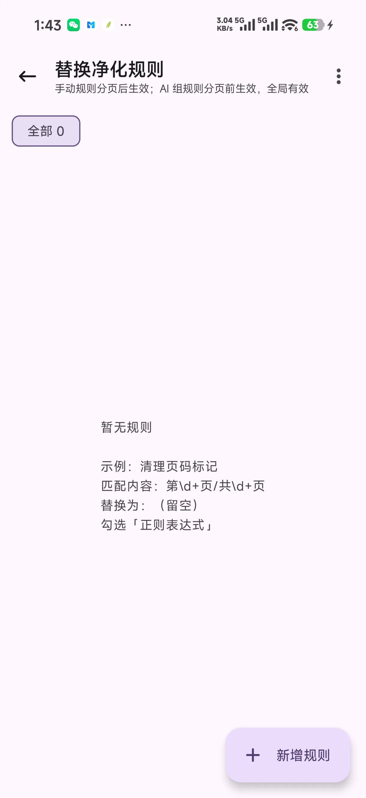
- 多源搜索 — 一次输入，多书源并发搜索聚合结果。
- 分类 / 排行浏览 — 按书源分类与榜单发现新书。
- AI 书源识别 — 粘贴任意小说页面链接，AI 辅助识别生成书源规则。
- 插件管理 — 扩展插件统一管理，有更新时「我的」页红点提示。
- 在线导入 — 支持 WebDAV、Z-Library、OPDS 等渠道下载入架。
阅读统计与数据管理Stats & Data
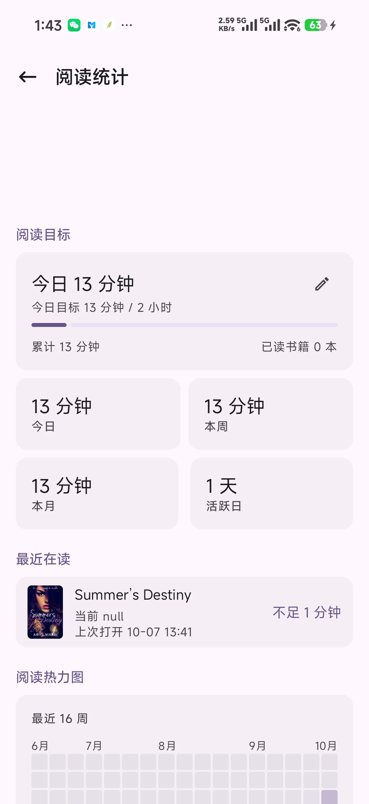
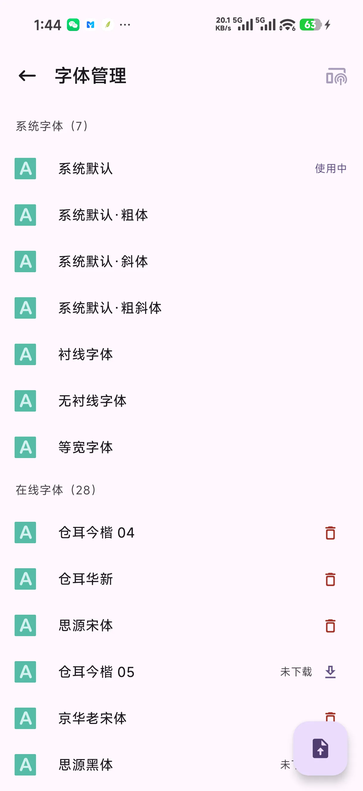
- 智能计时 — 停留无操作自动暂停计时，避免虚假阅读时长。
- 章节缓存 — 前台进度对话框 / 后台静默两种模式，可随时取消，缓存前引导加入电池优化白名单。
- 本地存储 — Room 数据库 + MMKV，全部数据留在设备，卸载降级也不清库。
- 密钥管理 — 所有 AI Key 集中查看管理，仅存本机。
局域网 Web 端Web Companion
应用内置局域网 HTTP 服务（独立前台 Service 保持后台可用），电脑浏览器访问手机地址即可使用，界面与 App 同风格的响应式网页：
在线阅读
浏览器直接阅读书架书籍，阅读进度与 App 同步。
书籍 / 字体上传
拖拽上传 TXT / EPUB 与字体文件，自动导入 App。
书源管理
网页端管理书源订阅与启用状态。
私密书架
独立密码保护的隐藏书架，Web 端同样可访问。
其他能力More
漫画阅读器
独立漫画阅读模式与图片查看器，支持缩放手势。
单手畅读
底部操作区下沉，大屏单手也能轻松翻页与呼出菜单。
简体 / 繁体
全文简繁实时转换，阅读无障碍。
贴心小功能
音量键翻页、翻页震动反馈、实时电量显示、熄屏超时、亮度随手指。